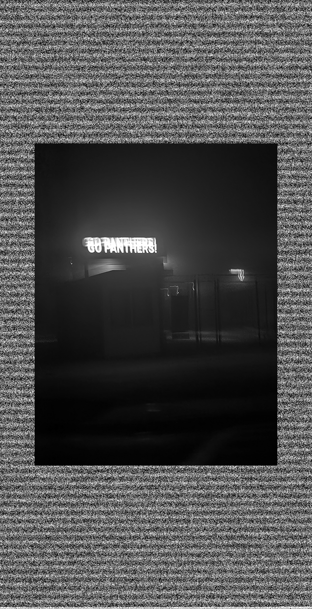

Artist statement goes here.
In my work with glitching different media I found that it was really immersive and the movement within the piece became much more prominent and it gave a sense of fluidity to the work that I didn’t expect to come out of it. When first experimenting in glitching I found it hard to try and get exactly what you’re trying to accomplish, it's nearly impossible to get your glitches perfect without hours of redoing certain actions over and over again in the software. For example the notepad was a significant challenge at first because it was a blind roulette of what might happen when you delete a line of text, sometimes making the piece look horrid or making it look stunning. With all that being said I did find a common theme between the works that I wanted to invoke and explore, that being the surreal sense of nostalgia. Nostalgia itself is a complex feeling that comes from remembrance and lost glory days, I feel these pieces capture that sense of peace being blended into static noise that now has become a distant memory, one you hold on to try to remember but slowly fades. Overall I feel this assignment was a good challenge for me as an artist because it led me to explore techniques I would never have thought to use on my own accord and create really interesting depictions of the feelings I hold within.